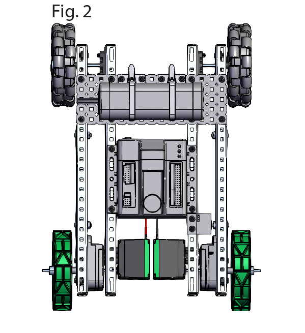

Drive
The drive is the base of the robot and enables movement as well as facilitating other components such as intakes and lifts. A good drive also has the added benefits of protecting fragile internal parts such as thin three-pin wires and the brain/cortex.
There are many types of drives and all of them have their pros and cons. The drive that you choose mainly depends on the active game released by VEX Robotics. Before considering the pros and cons of the drive types, turning scrub must be addressed.
Turning scrub is the friction a robot experiences while turning. This must be kept to a minimum to increase the efficiency of the robot’s movement and as a result, the speed at which you score points in a match. A robot turns most efficiently when the wheels are tangents to the turning circle (shown by the image below). The further the front and back wheels are from each other, the more friction there is. In the image below, the first two images have the wheels at a tangent to the turning circle.
Tank Drive –This is the drive that most people new to Vex Robotics start by creating. A tank drive consists of any number of wheels all facing in one direction with two independently controlled sides. Fig. 2 shows an example of a tank drive.
The advantages of using this drivetrain in competition are that it has the most traction to the field and is very difficult to push. This drivetrain is also generally compact compared to other types of drives, as a result of this, you can fit other components easier into the robot. The robot is also very easy to program.
Tank drive is very stable but for this stability, you trade off the ease of turning and experience more turning scrub. This is because the way the drive turns is by sliding across the ground. In a tank drive, not one wheel is at a tangent to the turning circle.

